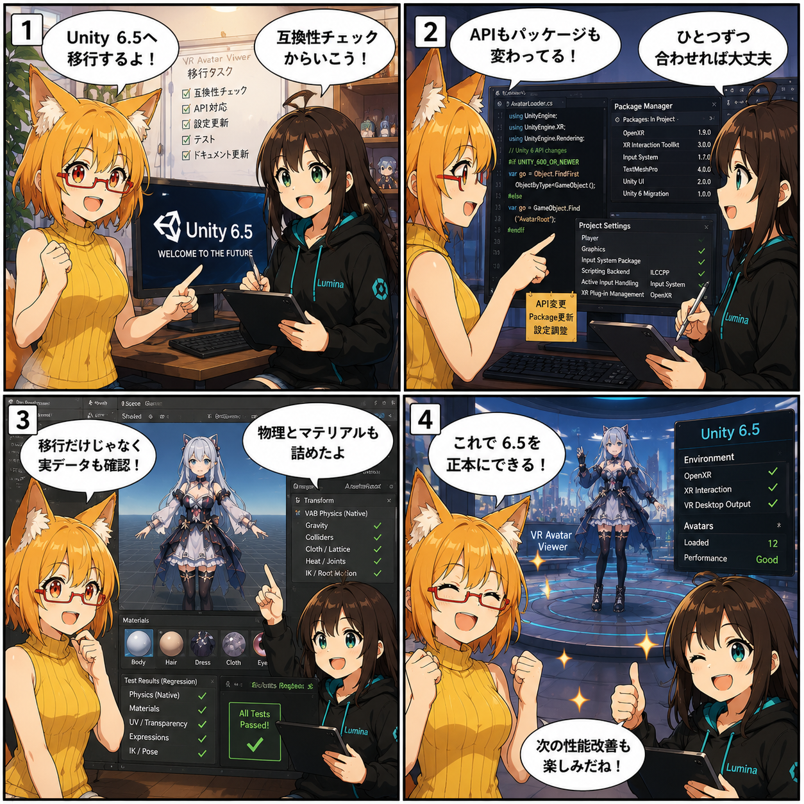

Unity 6.5へ、いよいよ本格移行！
今日は、VR Avatar Viewerの開発環境をUnity 6.5へ移す作業を本格化。単にEditorを新しくするだけでなく、APIやPackageの互換対応、実際のアバターや背景を使った回帰テスト、VABの物理・マテリアル復元までまとめて確認しました。

Unityを上げるだけ、では終わらない
中心になったのはコミット b6b223d の「Unity 6.5移行の互換対応とプロジェクト設定更新」です。ProjectVersionやPackage構成、GraphicsSettingsなどをUnity 6.5向けへ更新しつつ、API差分でそのままでは通らないコードも調整しました。
Unityのメジャー世代をまたぐ移行では、コンパイルエラーを消すだけでは十分ではありません。Editor上で開けても、アバターの読み込み、物理、シェーダー、VR入力、背景復元などが以前と同じように動くかは別問題です。今回は「起動する」より一段先の、実データで使える状態へ近づける作業になりました。
ろひ「Unity 6.5へ移行するよ！」
ルミナ「互換性チェックからいこう！」
実データを使って、移行後の壊れ方を探す
コミット a4c8129 では、Unity 6系移行向けの実データ回帰テストを追加しました。UnityPackage由来のアバターやVBGを対象に、実際のデータで以前の動作が維持されているかを確かめるテストです。
テスト用に単純化したデータだけでは、実際のアバターが持つ複雑なBone、Material、Physics、Prefab参照の組み合わせを拾い切れません。普段使っている実データを回帰テストへ持ち込むことで、「コード上は正しそうなのに、このアバターだけ崩れる」といった移行特有の問題を早めに見つけやすくしています。
VABの物理とマテリアルも、移行を機に詰め直す
コミット 6c34d17 では、VAB復元時の物理とマテリアル互換性を大きく改善しました。RuntimeAvatarBundle周辺にまとまった修正とテストが入り、アバターを保存状態から戻すときのPhysics初期化やMaterial復元をより堅牢にしています。
特にアバターでは、髪や衣装の揺れ方、半透明やカットアウトを含むMaterialの見え方が少し違うだけでも印象が大きく変わります。Unity 6.5へ移ったことで表面化した差分を、単なる「新しいUnityだから仕方ない」で済ませず、VAB側の復元処理まで追い込んだ形です。
開発環境の正本もUnity 6.5へ
集計期間の最後、コミット c7cf107 では、プロジェクトのAgentルールとUnity関連ドキュメントを更新し、Unity 6.5を開発環境の正本として明記しました。
これは単なる文章の変更ではなく、今後の修正・ビルド・自動化・検証が「どのUnityを基準にするか」を統一するための区切りです。Unity 2022.3時代の前提を引きずったまま作業すると、環境差による再現しない不具合が増えるため、コードと同時に開発ルール側も揃えています。
同じ集計期間に進んだこと
今回の集計期間には11コミットが入り、コミットごとの変更を合計すると81ファイル、3,115行追加、476行削除でした。Unity 6.5移行以外にも、VRまわりとファイル復元の改善が並行して進んでいます。
- e510625 — FBX座標系復元とufbx v9対応を追加
- 6d90878 — VABランタイム復元と遅延Physicsを堅牢化
- 54b16c8 — VRアバター化の身長判定と自己衝突処理を改善
- 0b6f3ac — Scene依存解決とVR入力Raycastを改善
- 22df307 — ライブコメントの画像取得保護と処理負荷を改善
- eb854de — VRデスクトップ出力解像度とミラー描画を改善
集計終了時点の最終HEADは c7cf1076bb7dfacd2564486f7c608725dd31549d（「Unity 6.5を正本として開発環境記述を更新」）です。
4コマの裏話
今回は「Unity 6.5へ移行する」という一言から始めて、APIとPackageの互換対応、実データ回帰テスト、VABの物理・マテリアル確認へ進む構成にしました。実際の移行も、バージョン番号を書き換えるだけではなく、こうして一段ずつ互換性を確認する作業の積み重ねです。
4コマのろひは、正式なキャラクター参照画像を生成入力として使い、金〜オレンジの髪、狐耳、赤い眼鏡、赤系の瞳、黄色のノースリーブという基準デザインを維持するようにしています。
今日のまとめ
- Unity 6.5向けにAPI・Package・ProjectSettingsの互換対応を実施
- 実アバター・背景データを使ったUnity 6系回帰テストを追加
- VAB復元時のPhysicsとMaterial互換性を改善
- FBX座標系、VR入力、アバター化、ライブコメント、ミラー描画も改善
- 今後の開発環境の正本をUnity 6.5へ更新
本日のひとこと
新しいUnityへ移すなら、アバターがちゃんと帰ってくるところまで。
Unity 6.5への移行は大きな節目ですが、目的はバージョン番号を新しくすることではありません。これまで作ってきたアバター表示やVR機能を維持しつつ、次の性能改善へ進める土台を整えること。今回でその基準線がかなりはっきりしました。